Canalave
Water Spout + Explosion into Hyper Voice + Earthquake
VS 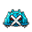 follow up with Eruption + Hyper Voice
VS 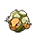 use X.SpAtk on Blastoise using Weezing Turn
CHANGE CHANNEL AFTER BATTLE TO IMMEDIATELY TP TO THE EXIT
Water Spout + Hyper Voice
VS 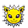 Water Spout + Helping Hand
VS 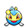 use X.SpAtk on Togekiss Hyper Voice using Blastoise turn
Water Spout + Explosion into Hyper Voice + Earthquake
VS 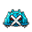 follow up with Eruption + Hyper Voice
VS 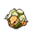 use X.SpAtk on Blastoise using Weezing Turn
CHANGE CHANNEL AFTER BATTLE TO IMMEDIATELY TP TO THE EXIT
Eruption + Hyper Voice
VS 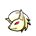 Eruption + switch Togekiss to Weezing at Turn 1, then use Assurance
Water Spout + Assurance
VS 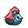 lead, switch out Weezing at Turn 1 and send in Vanilluxe Blizzard
VS 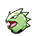 and 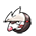 lead, if 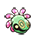 and 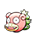 are sent out together at Turn 2, use Assurance on Cradily.
If Weezing gets KO’ed to crit Psychic/Draco Meteor, sub into Vanilluxe Blizzard
Eruption + Helping Hand
VS 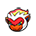 Eruption + Hyper Voice
VS 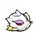 Incinerate + Hyper Voice
Change Channel afterwards to TP to the exit
Water Spout + Explosion into Hyper Voice + Earthquake
Change Channel afterwards to TP to the exit